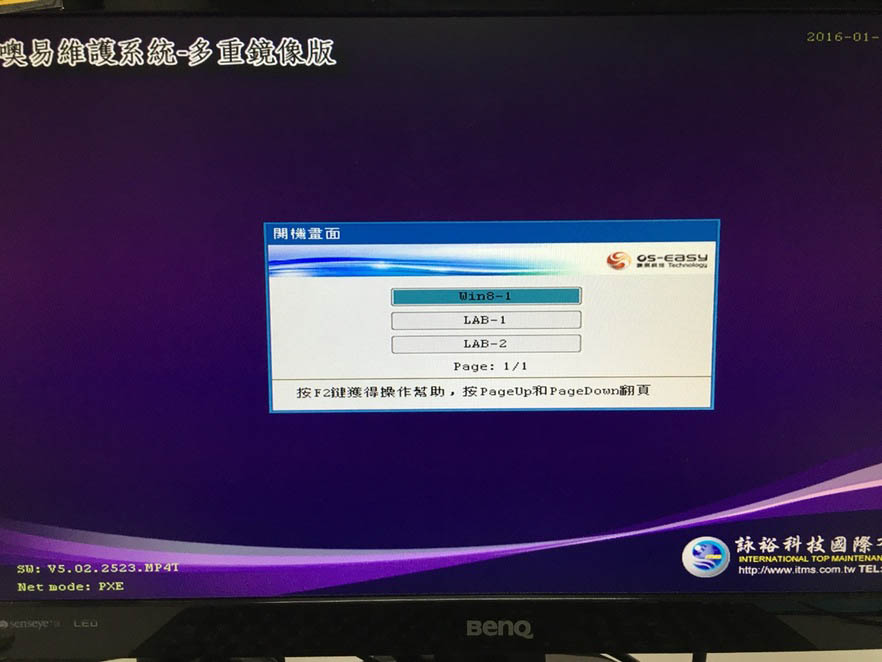
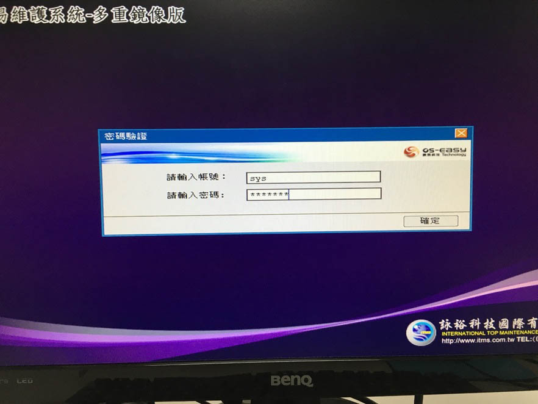
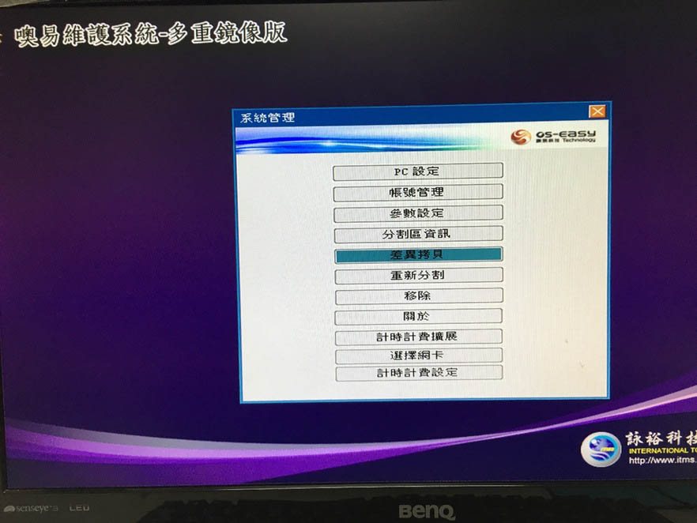
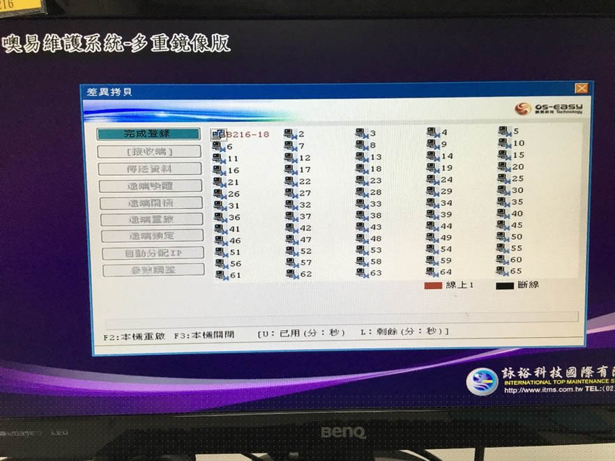
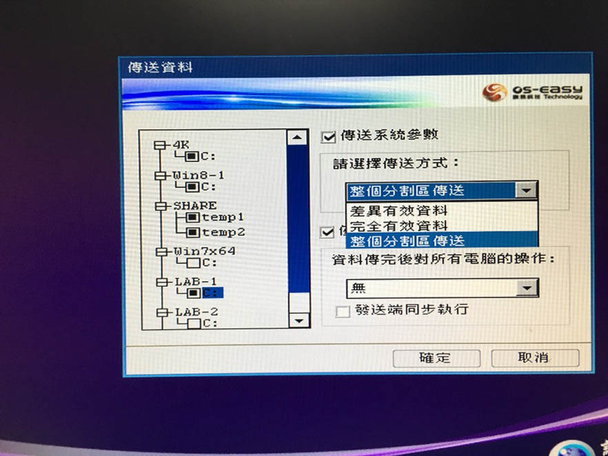
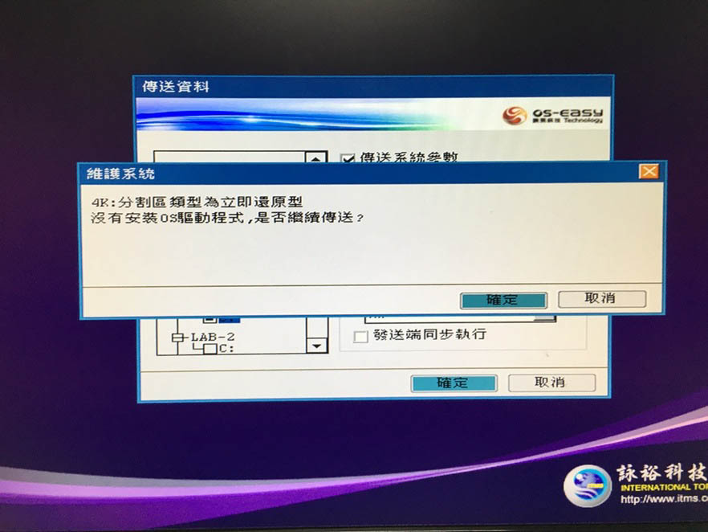
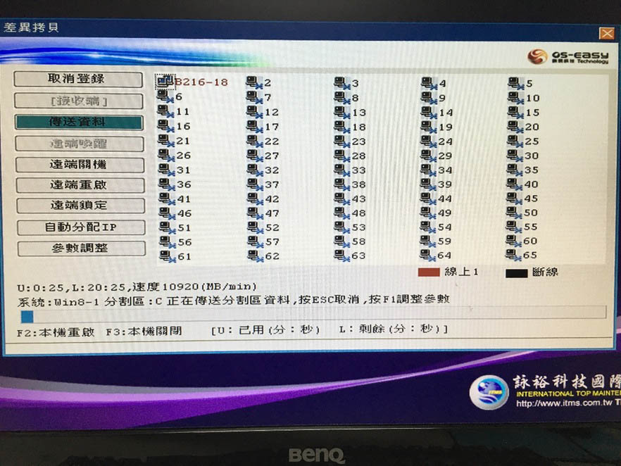
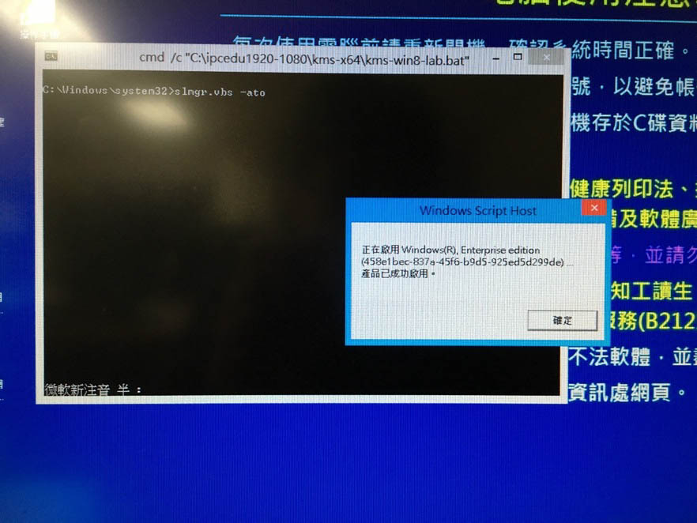
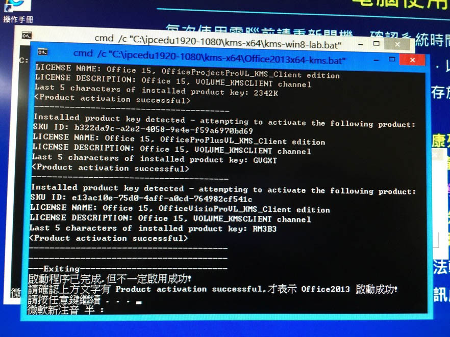

平常比較常遇到本機對拷，一般來說會拿隔壁電腦的硬碟來對拷
準備及注意事項
- 確認新的或有問題的硬碟，SATA 線插的號碼大小不要大於正常的硬碟，例如正常的硬碟插在 １ 號，有問題的就不能插在 ０ 號，因為程式是將硬碟號碼插在比較小的資料拷貝到號碼比較大的
- 硬碟型號是一樣的，不要把其他實習室的硬碟混在一起，除非有特別的指示
- 記得將電源線、SATA 線接好，硬碟電路板不要接觸到金屬部分，不然就墊個滑鼠墊在下面
開始對拷
準備對拷
電腦重開機後，進到系統選單，這時候請按下 F10
輸入帳號密碼
選擇差異拷貝
選擇傳送端

按完成登錄
選擇傳送資料

4K、SHARE 都要勾，剩下要傳哪些資料請務必先確認，按 TAB 鍵切換選項，ENTER 鍵勾選
如果硬碟沒洗掉，只需要勾選壞掉的系統就好

確認好傳送哪些資料後，選擇傳送系統參數、僅傳送到本機其他硬碟，對電腦的操作可以選擇“無“或是”重啟“，選完後按確定開始執行本機對拷
一般來說傳送方式請選擇完整有效資料，如果硬碟洗過後，才選擇整個分割區傳送，但會花較多時間
按確定繼續
開始對拷
按確定，但如果硬碟數量顯示為 0，代表它沒有抓到硬碟，請先關機，確認現有沒有接好，或是可以進 BIOS 看看有沒有抓到硬碟

請先等它跑一陣子後，確認沒有卡死，速度也都是正常的，新版速度大約可以 10000 MB/min，如果是舊版大概只會有一半的速度，都沒問題後就可以放著讓它跑，大約 20-40 分鐘可以跑完
速度可能會掉下來接著又回到正常速度，這算正常現象
對拷完
修改電腦名稱
對拷完後請重新開機，將硬碟放回原本的電腦，主機後面的線接好，開機後看到系統選單時一樣按 F10，進入到這畫面，請選擇 PC 設定，修改 IP
這邊要修改的有電腦名稱和 IP 位置，電腦名稱皆為”實習室代號－電腦編號“（如上圖）
IP 位址都有一定的規律，前三碼和預設閘道都是一樣的，最後一碼，請看隔壁的 IP 去推算，修改完之後按確認，並且按 Ctrl＋Alt＋Del 來重啟電腦
如果你今天拿 19 號的電腦來對拷它 IP 是 163.13.227.19，那麼隔壁台 20 號的電腦 IP 就會是 163.13.227.20

重開後，放著讓它跑，電腦會自己進入總管模式，會跳出下圖的視窗，它改完會自己重開，切勿自己手動改設定
假如你今天只有 Win7 一個系統，它修改完後就會自己回到 Win7 保護模式，但是如果今天有 Win7 + Win8 兩個系統，它會按照下列順序（進入 Win7 總管 - > 自動改 IP - > 重開機 - > 進入 Win8 總管 - > 自動改 IP - > 重開機 - > 回到 Win7 保護模式）

KMS認證
改完 IP 和電腦名稱後，記得要去做 KMS 認證（Windows＋Office），如果有兩個系統，兩個都要做，記得先進總管模式，路徑如下圖，點進資料夾後，會有許多個檔案，看那作業系統是什麼點開對應的 bat 檔，Office 請注意那台電腦裝的版本及位元

認證成功畫面
Windows
Office
對拷結束
IP、電腦名稱修改完後，KMS 認證也做完後，請重新開機讓電腦回到保護模式，確認正常開機後，便可將電腦關掉，完成對拷工作